# load data
ratings <- readRDS('ratings.Rds')I’m working on an assignment for a course on R Shiny. We have to explore any free, publicly available data and create an interactive dashboard with some visualizations and table displays. I am taking the opportunity to play with data about chess, a game I love to be bad at.
The data
I have opted to use the International Chess Federation’s open source data on all chess players and their ratings, available here. The data is quite large, with nearly 1.2 million players represented, though many registered players have null values for their ratings.
I wrote a quick cleaning script to remove some unwanted columns and to filter out players with null values. In particular, I filter out any player who has a standard rating of 0 or NULL. Check out repository sourcing this blog here for more details.
The data is pretty simple. I removed a few columns, then I made the Bdecade and Age columns by subtracting Byear from 2023 (so some people might be off by a year). Higher rated players have ratings in all three categories, but most of the data had a high degree of missingness. Of the nearly 1.2 million players represented in the data, only 397,040 players have a rating above zero in Standard time control. Filtering for SRtng > 0 may have been too simplistic - it’s possible there exist some people who have ratings in Rapid and Bullet but not standard - but I am mostly interested in displaying Standard ratings anyways.
Let’s look at the highest rated players in Standard time control.
library(dplyr)
# show highest rated players
ratings |> # I'm trying to use the new pipes now
arrange(desc(SRtng)) |>
head(10) |>
knitr::kable()| ID Number | Name | Fed | Sex | Tit | WTit | SRtng | RRtng | BRtng | Byear | Bdecade | Age |
|---|---|---|---|---|---|---|---|---|---|---|---|
| 1503014 | Carlsen, Magnus | NOR | M | GM | NA | 2859 | 2839 | 2852 | 1990 | 1990 | 33 |
| 4100018 | Kasparov, Garry | RUS | M | GM | NA | 2812 | 2783 | 2712 | 1963 | 1960 | 60 |
| 8603677 | Ding, Liren | CHN | M | GM | NA | 2811 | 2829 | 2787 | 1992 | 1990 | 31 |
| 4168119 | Nepomniachtchi, Ian | RUS | M | GM | NA | 2793 | 2761 | 2781 | 1990 | 1990 | 33 |
| 12573981 | Firouzja, Alireza | FRA | M | GM | NA | 2785 | 2745 | 2904 | 2003 | 2000 | 20 |
| 2016192 | Nakamura, Hikaru | USA | M | GM | NA | 2768 | 2750 | 2879 | 1987 | 1980 | 36 |
| 2020009 | Caruana, Fabiano | USA | M | GM | NA | 2766 | 2758 | 2818 | 1992 | 1990 | 31 |
| 24116068 | Giri, Anish | NED | M | GM | NA | 2764 | 2714 | 2807 | 1994 | 1990 | 29 |
| 5202213 | So, Wesley | USA | M | GM | NA | 2760 | 2780 | 2739 | 1993 | 1990 | 30 |
| 5000017 | Anand, Viswanathan | IND | M | GM | NA | 2754 | 2731 | 2733 | 1969 | 1960 | 54 |
Weird to think that some of these players also stream on Twitch.
A note on ratings
Chess uses a rating system called the Elo system to determine a player’s rating. There is some complicated math behind the rating that I don’t quite understand, but the difference in two players’ ratings is supposed to give us an insight into the probability of the outcomes for both players. Elo is used beyond chess: variations of it are used in everything from video games to dating apps.
Chess splits time controls into three categories: Standard, Rapid, and Bullet. You can play Blitz on chess.com or lichess.org but I’m not sure there are official ratings for 60 second games. In this data, SRtng, RRtng, and BRtng refer to Standard, Rapid, and Bullet.
Distribution visualizations
Lets look at the overall distribution of ratings. For this and all future visualizations, feel free to expand the code cells if you’re curious about plot construction with ggplot().
Code
library(ggplot2)
ratings |>
ggplot(aes(x = SRtng)) +
geom_histogram(bins = 50) +
scale_fill_viridis_d() +
scale_y_continuous(label = scales::comma) +
xlab(NULL) +
ylab(NULL) +
labs(
title = 'Standard Elo Ratings',
caption = 'Data: FIDE, January 2023\nViz: @bristowrichards'
) +
theme_classic()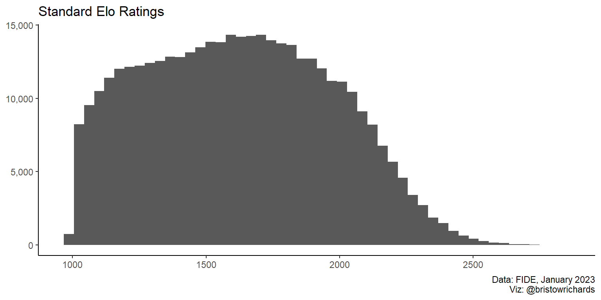
Chess Elo ratings are right-skewed with a range of roughly 1000 to around 2800. The distribution isn’t very normal: it has two distinct “elbows” around 1200 and again at around 1700. It looks like what could the combination of two underlying distributions, one of high skilled players and one of low skilled players.
By the decades
I was curious about grouping this histogram by birth decade to see the relative size and ratings of different generations of players.
Code
ratings |>
ggplot(aes(x = SRtng, fill = Bdecade)) +
geom_histogram(bins = 50) +
scale_fill_viridis_d() +
scale_y_continuous(label = scales::comma) +
xlab(NULL) +
ylab(NULL) +
labs(
title = 'Standard Elo Ratings, Frequency',
caption = 'Data: FIDE, January 2023\nViz: @bristowrichards',
fill = 'Decade born'
) +
theme_classic()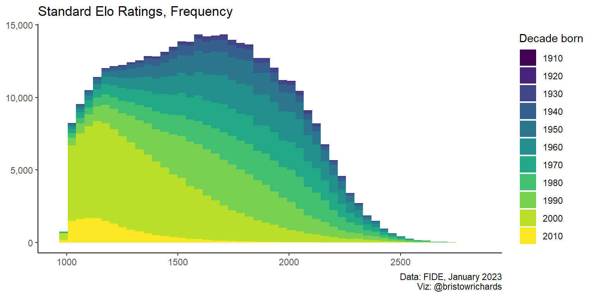
This is fascinating! There seems to be a massive number of players born between 2000 and 2010 that are mostly rated on the lower side of things. Each of the decade bands from before the year 2000 seem to have similar distributions, but a stacked histogram is a bad way to make visual assessments. Let’s use geom_freqpoly() to make frequency lines for each decade group so we can compare their frequencies at different ratings.
Code
ratings |>
ggplot(aes(x = SRtng, color = Bdecade)) +
geom_freqpoly(bins = 50, linewidth = 1) +
scale_color_viridis_d() +
scale_y_continuous(label = scales::comma) +
xlab(NULL) +
ylab(NULL) +
labs(
title = 'Standard Elo Ratings, Frequency',
caption = 'Data: FIDE, January 2023\nViz: @bristowrichards',
color = 'Decade born'
) +
theme_classic()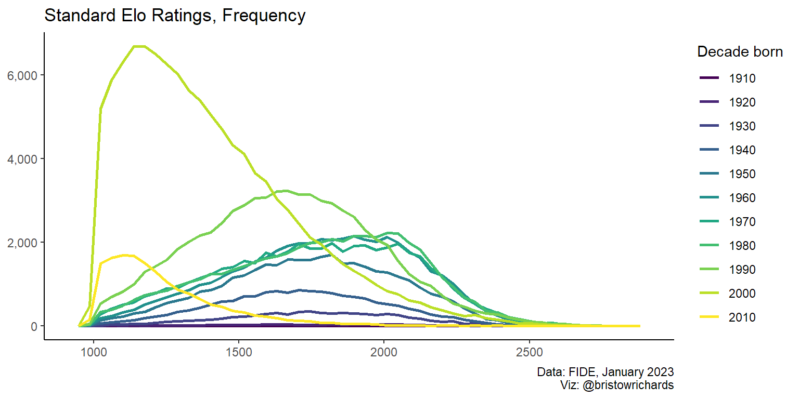
My first impulse wasn’t very far off: the groups born before 2000 have pretty similar distributions, especially those born between 1960-1989. I’m fascinated by the apparent convergence into the shape of the 1980 generation. Will those born in the ’90s eventually approach the same distribution shape? What about those born in the early 2000s?
And speaking of the early 2000s: look at that explosion in population! Those are people aged 14-24. That group contains Alireza Firouzja, the Persian prodigy who is the youngest player ever to reach 2800 Elo. It’s really cool to see in data that the population of players is growing in size and perhaps also in skill.
If each group has a different number of members, it can be hard to vizually compare age groups and their relative skills to other groups. To address this, we can use the geom_density() geom to plot the distributions as densities and not frequencies:
Code
ratings |>
ggplot(aes(x = SRtng)) +
geom_density(aes(color = Bdecade), linewidth = 1) +
scale_color_viridis_d() +
geom_density(linetype = 'dashed', color = 'red', linewidth = 1.5) +
scale_y_continuous(label = scales::comma) +
xlab(NULL) +
ylab(NULL) +
labs(
title = 'Standard Elo Ratings, Density',
subtitle = 'The dashed line indicates all players',
caption = 'Data: FIDE, January 2023\nViz: @bristowrichards',
color = 'Decade born'
) +
theme_classic()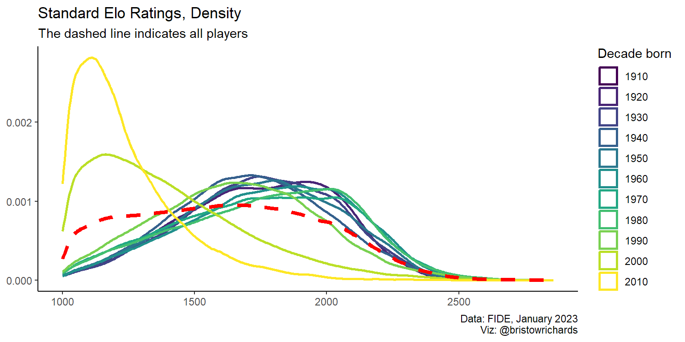
Okay, now we can confirm that, at least visually, the generations born before the year 2000 seem to be converging to a similar general pattern, whereas younger players are much less skilled. Running some t tests comparing different age groups could be a fun statistics refresher, but I’ll save that for another post.
Comparing countries
The three highest-rated federations according to FIDE are the United States of America, Russia, and India, in that order. FIDE reports this list here by averaging the rating of the top ten players in each federation. Drawing a separate line for each of the 198 countries would be messy, but it should be easy to just select three countries. I’ll use dplyr::filter() before passing the data to the same ggplot calls as above.
Code
my_countries <- c('USA', 'RUS', 'IND')
ratings |>
filter(is.element(Fed, my_countries)) |>
ggplot(aes(x = SRtng, fill = Fed)) +
geom_histogram(bins = 50) +
scale_fill_viridis_d(end = 0.6) +
scale_y_continuous(label = scales::comma) +
xlab(NULL) +
ylab(NULL) +
labs(
title = 'Standard Elo Ratings, Frequency',
caption = 'Data: FIDE, January 2023\nViz: @bristowrichards',
fill = 'Federation'
) +
theme_classic()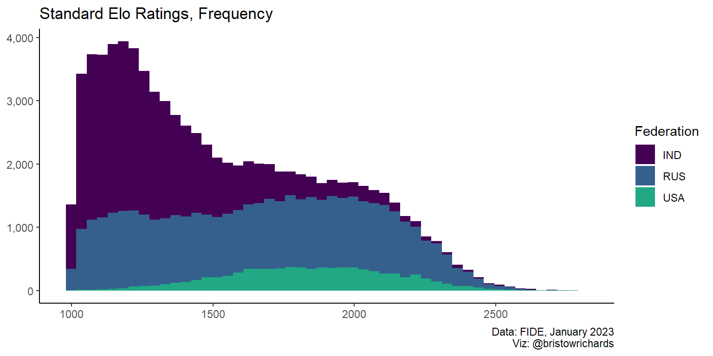
It is much more apparent that stacked histograms are inappropriate for comparing groups with this plot. Lets check geom_freqpoly() again:
Code
ratings |>
filter(is.element(Fed, my_countries)) |>
ggplot(aes(x = SRtng, color = Fed)) +
geom_freqpoly(bins = 50, linewidth = 2) +
scale_color_viridis_d(end = 0.6) +
scale_y_continuous(label = scales::comma) +
xlab(NULL) +
ylab(NULL) +
labs(
title = 'Standard Elo Ratings, Frequency',
caption = 'Data: FIDE, January 2023\nViz: @bristowrichards',
color = 'Federation'
) +
theme_classic()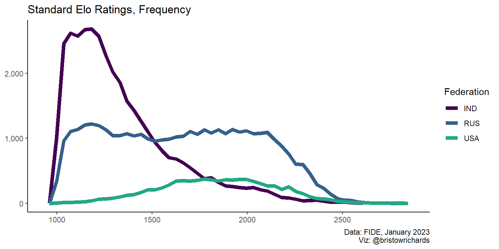
The big takeaway here seems to be that Russia and India have many many more players than the US has. We can scale back down with geom_density() to compare between groups, like before:
Code
ratings |>
filter(is.element(Fed, my_countries)) |>
ggplot(aes(x = SRtng, color = Fed)) +
geom_density(size = 2) +
scale_color_viridis_d(end = 0.6) +
scale_y_continuous(label = scales::comma) +
xlab(NULL) +
ylab(NULL) +
labs(
title = 'Standard Elo Ratings, Density',
caption = 'Data: FIDE, January 2023\nViz: @bristowrichards',
color = 'Federation'
) +
theme_classic()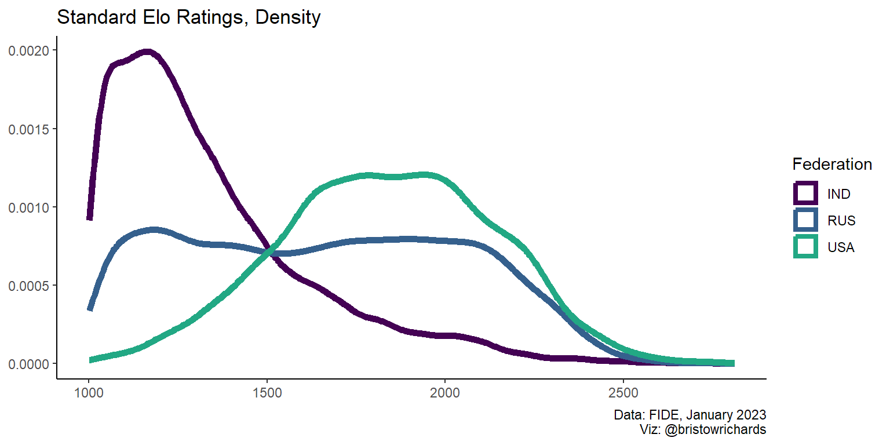
From this distribution, it seems that the USA has a more generally skilled group of players. However, another interpretation that might perhaps be truer to life is that India is better at welcoming newer, younger players to the sport.
ggplot2 mechanics
I am working on a dashboard project using this data, and I’d like to be able to change the type of plot displayed between these three kinds of distribution plots: geom_histogram(), geom_freqpoly(), and geom_density(). The good news is that these geoms all behave pretty similarly. So I’d like to make something like this:
# theoretical input
user_input <- 'histogram'
# theoretical plot code
ratings |>
ggplot(aes(x = SRtng, fill = Bdecade, color = Bdecade)) +
if (user_input == 'histogram') {
geom_histogram() +
labs(title = 'Histogram plot')
} else if (user_input == 'freqpoly') {
geom_freqpoly() +
labs(title = 'Frequency Polygon Plot')
}Error:
! Cannot add <ggproto> objects together
ℹ Did you forget to add this object to a <ggplot> object?When I ran code like this, I hit an error I had never seen previous to this week. I never knew why the + operator was used after ggplot() calls. The warning above led to some Google searching and I figured out why: everything after the ggplot() call is a ggproto object that provides a sort of list of options. A geom_histogram() provides a list of generic options unless I specify argument in the function call. A style_classic() function call provides a list of other options. These two lists of options have no meaningful way to interface with each other. So, if I nest two ggproto objects together in an if statement, added with a + sign, R will try to evaluate the meaning of those two objects added together before passing the combined result to the ggplot object. This is a problem! I couldn’t find out what to do and feared I would have to copy and paste a lot of code dependent on many different types of inputs.
Thankfully, Hadley Wickham and the other kind folks at Posit designed ggplot2 well. This issue of trying to bundle multiple ggproto objects together and pass them to the main ggplot() call seems like an important feature, but my approach above was not right. You don’t need to add ggproto objects together, you just have to combine them into a list. Using ggplot() + list(...), you can pull every non-null item out of any list and add it to your plot object.
set.seed(1234) # to draw a reproducible sample
ratings |>
slice_sample(n = 1000) |>
ggplot(aes(x = Age, y = SRtng, color = Sex)) +
list(
geom_point(),
labs(
title = 'Age vs Standard Rating',
caption = 'Data: FIDE, January 2023\nViz: @bristowrichards'
),
scale_color_viridis_d(end = 0.6)
) +
theme_classic()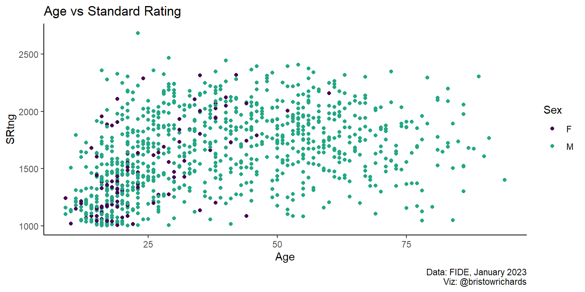
Most exciting of all, you can do this for nested lists! Look at the nested lists below. I added some NULL values to the list to show how ggplot2 recursively searches for all non-null values in a list to add to the main ggplot() call.
ratings |>
slice_sample(n = 1000) |>
ggplot(aes(x = Age, y = SRtng, color = Sex)) +
# first list
list(
geom_point(),
# first nested list
list(
labs(
title = 'Age vs Standard Rating',
caption = 'Data: FIDE, January 2023\nViz: @bristowrichards'
),
# ggplot will ignore this!
NULL
),
scale_color_viridis_d(end = 0.6)
) +
# I mean, come on
list(list(list(list(theme_classic())), NULL))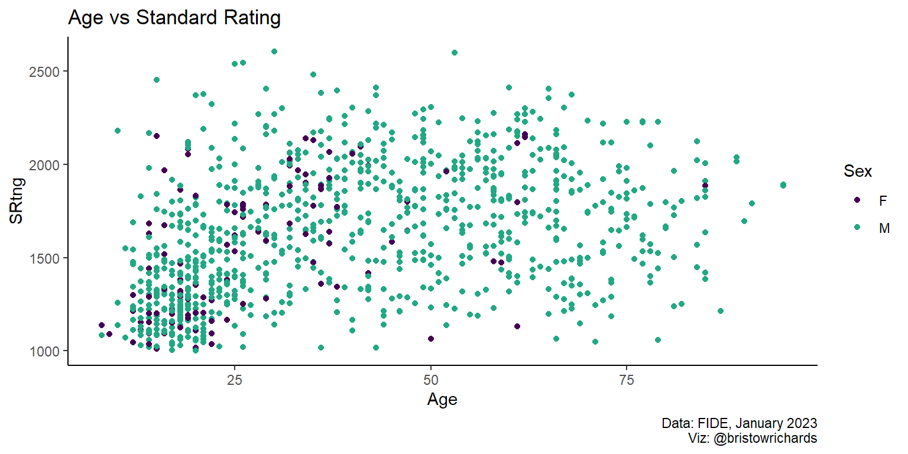
This bodes very well for conditionally creating different kinds of plots based on a user’s inputs. For now, I am planning on adding generic settings to one list, then creating a second list containing some different kinds of charts. Then, I plan to add both lists to one main ggplot() call. Alongside understanding how to recursively search through lists, ggplot2 knows to ignore any settings you manually set to NULL. This means I can build following this scheme: create a function that accepts user input, selectively paste ggproto elements into a list based on that input, then attach that list to the ggplot() call. Below I define such a function:
# a theoretical list of inputs (shiny works like this)
user_input <- list(
plot_type = 'hist',
group = 'none'
)
create_plot <- function(input) {
# define generic settings to add to each plot regardless of inputs
plot_settings <- list(
labs(caption = 'Data: FIDE, January 2023\nViz: @bristowrichards'),
theme_classic()
)
# make list of different plots (this just has one as an example)
plot_list <- list(
'hist' = list(
geom_histogram(
aes(
fill = if (user_input$group != 'none') .data[[user_input$group]]
)
),
labs(title = 'Histogram: Rapid Elo')
)
)
# now combine and render everything
ratings |>
ggplot(aes(x = RRtng)) +
list(plot_settings, plot_list[[user_input$plot_type]])
}
create_plot(user_input)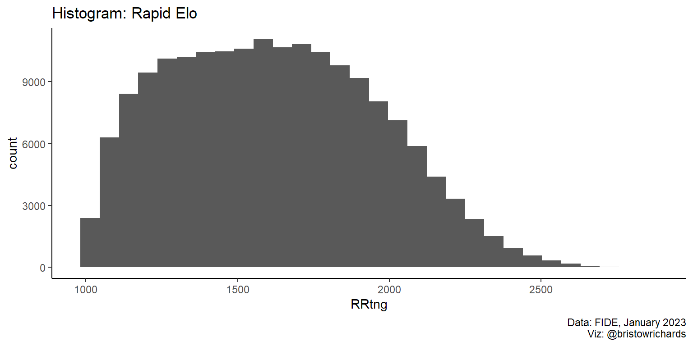
Above, we set up the function to refer to the user input to find the desired plot type. We also defined the plot_list$hist to contain a histogram that could, if necessary, accept a group argument to give to the fill aesthetic. Let’s change the user’s input to make fill = Bdecade:
# change input
user_input$group <- 'Bdecade'
create_plot(user_input)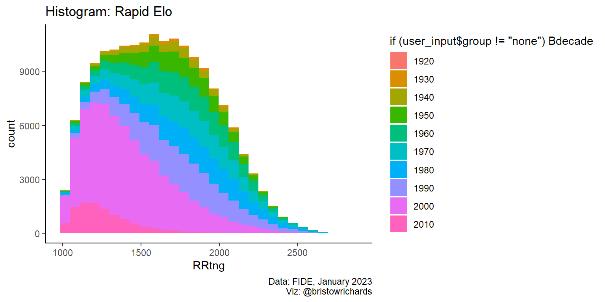
It works, kind of! I’m leaving the funny legend label because I think it’s insightful to see how ggplot2 is thinking about the argument I gave that fill aesthetic. Still, this is really insightful.
Conclusion
You can make plots using lists of lists (of lists (of lists)) as long as every item at every level of that list is either a valid ggproto object or NULL. That means you can conditionally define things to become NULL when not needed, then attach a big list to whatever you need to render in the moment. I find this extremely helpful. This isn’t the biggest discovery in the world, but I am still proud to have tinkered with this long enough to learn some of the subtleties of the design of ggplot2.
Further reading
The link to download FIDE ratings is here.
Read up on the very confusing math of competitive matchmaking Elo scores here.
For some fun reading about a dynamic sibling duo thriving at the intersection of chess and entertainment, read up on the Botez sisters.
For more about Alireza Firouzja, a prodigious young player and the youngest ever to reach 2800, read here. His story is fascinating and reveals a complicated relationship between the simple game of chess and the international politics undergirding the sport’s highest levels of competitive play.
All code powering this post and this site are hosted on my GitHub here.